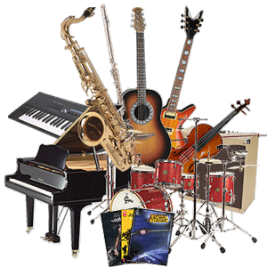

Different Types Of Instrument Families
Why Do People Enjoy Playing Musical Instruments?
Musical instruments go back as 40,000 years ago, when the first flute was invented. In today's world, musical instruments are heard almost everywhere. Millions of people own and practice an instrument every day, and many simply just adore music. These instrumental objects are adored by many, each used for various reasons. In reality, any object that produces any sort of sound or vibration can be considered as a musical instrument! That also includes clapping, snapping, tapping, and singing. On this webpage, you will read and learn about the different instruments and their families, why people enjoy playing them, and so much more.
Here are some examples of different types of instrument families, provided with a Wikipedia link on the specific instrument to find out more information if interested. An instrument is classified into a family, based on the way that they sound and the way they produce vibration. There are 4 different big instrument families: woodwind, string, brass, and percussion. Every instrument sounds different and has their own unique sound to them. Only the most common and popular instruments will be mentioned, as there are hundreds of instruments in the world.
To alter someone's mood, people may enjoy playing musical instruments as a form of relaxation. Why, must you ask? The relaxing, soothing sound of an instrument may bring happiness to your ears, reducing levels of pain, anxiety, stress or anger. According to some individuals, the sound of music is equally comparable to the sound of a nice violin, being gently played by a bow with very gentle chords and notes. Everyone loves the sound of music from a man-made instrument to wind down their day and talk about happiness.
People may entertain other individuals to give them satisfaction, to just hear them play may brighten up their day. The entertainment industry is open for a wide range of musicians, for the ones who want to play music to please others. The world needs more creative and amazing musicians. Musical instruments are also a great way to express how you are feeling, as there are many different genres of music in the world, and they all possess different feelings and emotions that an individual may perform on an instrument. Sometimes, when you're at your lowest, music can cheer you up. It motivates you to push through it and keep on going.
Lots of people pursue careers playing musical instruments. For example, people have professions from performing in a musical ensemble, to working with a choir. People may also work in the music industry composing musical scores and compositions for musical ensembles The life of a musician may be challenging at first to get noticed by upper-class people, but once you get out there and start performing and making connections with other people like you, you'll start to build a foundation. This may include playing a musical instrument, or even singing. Musicians can utilize their skills to create amazing sounds as a work of art. By using their skills with instruments and their voices, a musician creates a lasting impression that captivates and inspires the audience. Although these jobs / professions require proper training and education, if you put your mind to it and have a strong passion for this area, nothing is stopping you. You WILL succeed. That's guaranteed.
Musical instruments have had a big impact on the world today, as many people enjoy these products as forms of satisfaction. Not only do people love musical instruments, but they adore all the different uses people make out of them. Musical instruments are highly beneficial in so many countless ways. The amount of ways people use these instruments to please others; is just outstanding.